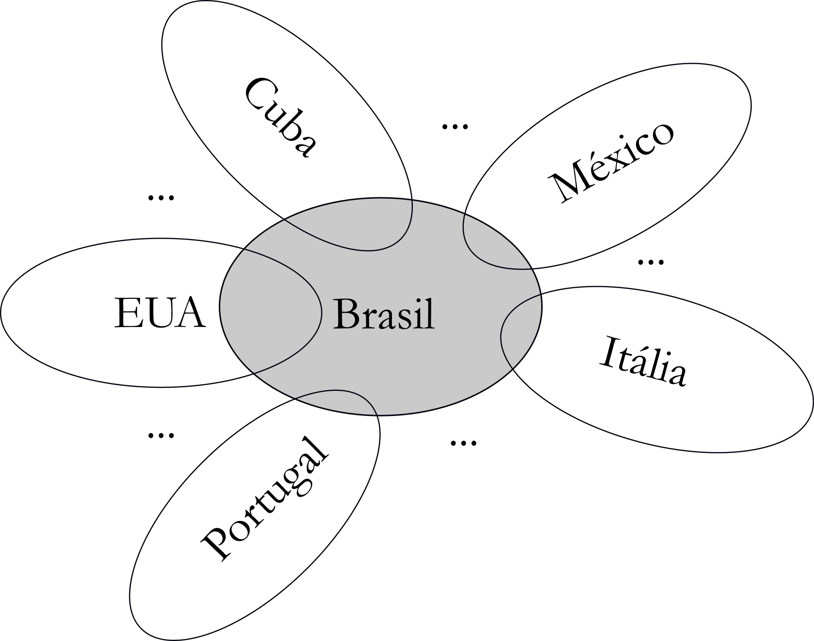

Uma breve discussão sobre estilo musical
Como já discutido no texto introdutório, o estilo musical se apresenta como um verdadeiro centro de gravidade da pesquisa. Neste capítulo, tentaremos elencar um conjunto de conceitos e reflexões, tendo como principal objetivo propor uma sistematização em relação a um tema que, claramente, envolve questões subjetivas.
Contextos estilísticos
Iniciaremos a discussão definindo os contextos e delimitações envolvidos. Sem a pretensão de sermos histórica ou musicologicamente precisos (já que isso não é de grande relevância para nossa abordagem), consideremos a grosso modo, inicialmente, uma clivagem da produção musical que teria ocorrido em algum período da Idade Média. Como mostrado na ?@fig-estilo01, num esquema simplificado em formato de árvore, é possível considerar a tradição musical oral (cuja origem é virtualmente impossível precisar) como representada por um tronco básico, a partir do qual se ramificaria a tradição musical escrita. Essa ramificação se evidencia não apenas pela introdução da nova tecnologia da notação das composições (consolidada gradualmente, bem entendido), mas também de sua documentação teórica, seja prescritiva ou analítica.
{#fig-estilo01}
Alguns séculos depois desse (bastante impreciso) ponto temporal, aproximadamente com o advento da Revolução Industrial e, posteriormente, da nova era desencadeada pela Revolução Francesa e com o consequente fortalecimento econômico da burguesia nas grandes cidades, começaria a surgir no domínio musical uma nova tendência, brotando como um ramo da tradição oral, a música popular urbana, como representado na ?@fig-estilo02. Esse novo tipo, ainda que não registrada pela notação em partitura,1 diferia da música de tradição oral que lhe deu origem pela inclusão de novos elementos, modelados da música praticada nas cortes e nas recentemente criadas salas de concerto. A tonalidade – representada por seus aspectos inerentemente associados, como acordes, funcionalidade, modulações etc. – é, por certo, o fator central compartilhado pela música “erudita” (ou música de concerto, em sua designação mais adotada atualmente) e os novos gêneros populares. A música popular divergiria então de sua fonte – os gêneros folclóricos, essencialmente, mas não apenas, rurais – pelo ambiente de alturas em que se desenvolveu, ou seja, essencialmente tonal, em oposição aos contextos modais que prevaleciam na música de tradição oral precedente.
{#fig-estilo02}
Por outro lado, o ritmo pode ser visto como o fator principal de separação entre a música popular inicial e a música de concerto. Uma grande diversidade de configurações rítmicas – em sua maioria, derivadas de expressões originalmente coreográficas – começou a proliferar, dando origem ao que denominamos hoje em dia de gêneros de música popular (samba, choro, baião, jazz, rock, guajira, blues, bolero, rumba, tango, habanera etc.), incluindo seus inúmeros subgêneros. Com o passar do tempo, a divergência erudito/popular começou também a se acentuar em relação a outros aspectos da estrutura musical, surgindo especificidades que passariam a ser peculiares dos gêneros populares. É o que se observa, por exemplo, nos domínios da forma (a estrutura em 12 compassos do blues, o forma rondó do choro etc.), da instrumentação (as big bands, as exuberantes seções de percussão de escolas de samba ou da música cubana etc.) ou da harmonia (os chamados acordes “SubV”, o uso de tensões harmônicas como notas estáveis etc.).
No entanto, desde seu surgimento, a nova música popular tem sido distinguida da música de concerto não apenas por suas qualidades intrinsecamente musicais (como aquelas acima mencionadas), mas também por outras questões externas (envolvendo principalmente aspectos sociais e/ou econômicos), como se pertencesse a uma “baixa” e, implicitamente, menos valorada expressão cultural. Infelizmente, parte dessa visão ainda se mantém nos meios acadêmicos, embora haja atualmente uma forte e salutar tendência para que seja superada.
Música Popular Brasileira: uma discussão preliminar
Dando prosseguimento à presente abordagem introdutória ao tópico “estilo musical”, torna-se mais prático e conveniente abandonarmos as representações em árvore e passarmos a configurar os contextos estilísticos como conjuntos, aproveitando a vantagem que esse recurso traz para a discussão, a saber, evidenciar relações de interseção e conexão entre os diferentes contextos.
Nesse sentido, a ?@fig-estilo03 propõe uma representação simplificada das possíveis relações de mútua influência entre as músicas populares de vários países, elegendo o Brasil como referência. Desse modo, cada contexto pode ser visto como um conjunto que intersecta o contexto brasileiro (por simplicidade, as possíveis interseções entre os conjuntos dos demais países exemplificados foram omitidas). Observe-se que a área compartilhada entre os conjuntos “Brasil” e “EUA” é bem maior do que as demais interseções, o que não é casual no esquema: historicamente, essa relação de influência (a bem da verdade, bastante assimétrica, ou seja, privilegiando o sentido exterior → interior) foi sempre muito intensa, como, por exemplo, os modismos desencadeados pelo foxtrot ou pelo rock, entre diversos outros ao longo do século XX.
{#fig-estilo03}
Direcionando agora o assunto ao foco do presente projeto, podemos considerar o almejado contexto da Música Popular Brasileira (representado consensualmente pela sigla MPB) como o subconjunto “MPB” do conjunto referencial “música popular urbana do Brasil”2 que, implicitamente, conteria outros subconjuntos de similar natureza histórico-estética (eis algumas possibilidades, por exemplo: “sambas-canções dos anos 1930-50”, “jazz brasileiro”, “BRock”, “sambas de enredo” etc.).3
{#fig-estilo04}
Evidentemente, esses conjuntos não podem ser vistos como entes isolados, especialmente dadas as relações de influência, como já mencionado. A ?@fig-estilo05 atualiza o esquema da ?@fig-estilo04, conectando o sistema “música popular urbana do Brasil”/“MPB” ao análogo “música popular urbana dos EUA”/“JAZZ”, de modo a evidenciar a reputada influência da prática harmônica jazzística sobre a harmonia da MPB, tendo como ponto de entrada a Bossa Nova, disseminando-se em seguida para os demais gêneros.4 Trataremos neste projeto tal alegação informal como uma das hipóteses de trabalho a serem adotadas nas análises.5
{#fig-estilo05}
A ?@fig-estilo06 apresenta um zoom do subconjunto “MPB” de modo a detalhar seu interior.6 Os estilos dos compositores que formam os membros desse subconjunto (representados por círculos numerados), integram, por sua vez, espécies de “regiões estéticas” identificadas por seus conhecidos “nomes-fantasia”: “Tropicalismo”, “Bossa Nova”, “Clube da Esquina” etc.7 Observe-se ainda que o esquema denota situações em que um mesmo compositor atuaria em mais de uma “região”. Consideremos, por exemplo, o caso de um compositor cujo estilo (ao qual atribuiríamos, digamos, o número 8) abranja canções tanto bossa-novistas quanto em estética “nordestina”. Tal situação revela um pouco da alta complexidade que envolve estudos sobre o estilo. Embora instigante, não prosseguiremos a investigação em relação a esse aspecto específico.
{#fig-estilo06}
Por outro lado, consideramos bastante relevante o mapeamento de inter-relações de influência entre os membros do subconjunto-alvo (esquematizadas na ?@fig-estilo07) e, claro, dos pontos de contato entre seus estilos particulares e os elementos que os caracterizam.
{#fig-estilo07}
É também relevante para a investigação que se dá no âmbito deste livro medir sistematicamente características estilísticas do SA como um todo integrado, diferenciando-o tanto do superconjunto que o contém – “música popular urbana do Brasil” – quanto do subconjunto “JAZZ” com o qual intersecta. Por hipóteses, os membros de SA herdariam características melódicas do superconjunto (representado pelos gêneros-matrizes do samba e do choro) e elementos harmônicos do subconjunto jazzístico interceptado, como sugerido na ?@fig-estilo08. Esses três gêneros (samba, choro e jazz) serão considerados na pesquisa como grupos de controle e serão representados por corpora de tamanhos semelhantes aos selecionados para a análise.8
{#fig-estilo08}
Por fim, é central para o presente trabalho a diferenciação entre os estilos dos membros selecionados do subconjunto-alvo, o que resultará no mapeamento de suas características peculiares. Em outros termos, é preciso estabelecer uma perspectiva adicional, a partir dessa nova dimensão. A ?@fig-estilo09 propõe uma possível representação dessa dimensão, como um corte transversal do subconjunto. De acordo com essa proposta, os diferentes tamanhos das “linhas” que ligam os “balões” (os estilos composicionais) ao “solo” corresponderiam às particularidades de cada caso.
 {#fig-estilo09}
{#fig-estilo09}
Regras e estratégias
Provavelmente, Leonard Meyer foi o pioneiro nos estudos sistemáticos sobre o estilo musical, a partir do que apresenta em seu influente livro Style and Music (Meyer 1989). Dos vários conceitos e formulações propostos por Meyer, a dualidade regras/estratégias apresenta-se como um ótimo ponto de conexão com o desenvolvimento que é proposto neste capítulo.
Basicamente, as normas de estruturação musical tacitamente compartilhadas entre os compositores que habitam o mesmo contexto estético-temporal (por exemplo, uma sintaxe funcional específica, configurações rítmicas características, alternativas de estruturação formal etc.) formariam o conjunto de regras (rules)9 que, em última instância, estabelece as fronteiras estilísticas desse contexto. Nos termos apresentados nas notas introdutórias do projeto, as regras compartilhadas pelos compositores definiriam justamente os contornos da Prática Comum da MPB. A evidenciação desse comjunto de procedimentos e técnicas é, como já dito, um dos principais objetivos do projeto.
Por outro lado, o conjunto de preferências idiossincráticas de um determinado compositor em relação àquelas adotadas por outros membros do mesmo contexto, referentes a determinados aspectos musicais, constituiria, no entendimento de Meyer, um grupo de estratégias (strategies). Entenda-se que uma escolha composicional fortuita não caracterizará, por si só, uma estratégia, o que se daria apenas através de sua cristalização por recorrência. Isso nos traz um ponto de enorme importância para o estudo do estilo, que é justamente a dimensão estatística, aspecto também enfatizado por Meyer em seu livro.10
Marcadores estilísticos
Outro conceito de Meyer com grande importância para o presente trabalho é o de marcadores estilísticos (stylistic markers).11 Basicamente, os marcadores são aspectos da estrutura musical com a propriedade de definir –- ou ajudar a definir, juntamente com outros marcadores – um determinado estilo.
Em nosso entendimento sobre o conceito, devidamente adaptado aos objetivos e condições do projeto, um marcador estilístico pode sugerir dois tipos de relação, considerando um determinado ator (digamos, o estilo de Caetano Veloso) e um contexto (seja ele o subconjunto-alvo, o superconjunto da “música popular do Brasil”, ou os subconjuntos de controle, “JAZZ”, “SAMBA” ou “CHORO”.): centrípeta, que sugere a existência de uma tendência razoável de que o ator pertença ao contexto em questão, ou então centrífuga, neste caso, sugerindo que a tendência de pertencimento é baixa ou virtualmente desprezível.
A ?@fig-estilo10 propõe uma ilustração genérica da ação desses conceitos considerando um ator hipotético \(x\) e um contexto \(C\) de referência. Dois marcadores estilísticos – \(m_1\) e \(m_2\) – apresentam comportamentos distintos: enquanto o primeiro tende a manter \(x\) em \(C\) (portanto, um marcador centrípeto), a tendência de \(m_2\) é oposta, sugerindo uma ação centrífuga.
 {#fig-estilo10}
{#fig-estilo10}
De modo prático, marcadores estilísticos são associados a atributos específicos, melódicos ou harmônicos (por exemplo, número de tonalidades distintas empregadas no corpus, presença de classes de acordes de empréstimo modal, configurações rítmicas predominantes etc.).12 Os marcadores são avaliados qualitativa ou quantitativamente (neste caso, considerando grandezas percentuais).
Além da natureza qualitativa ou qualitativa, os marcadores podem ser classificados de acordo com a intensidade (ou impacto) com que atuam na tarefa de determinar o pertencimento de um ator a um determinado contexto.13 Ou seja, um marcador pode ser considerado como “forte”, “fraco” ou mesmo irrelevante nesse sentido. De todo modo, é possível combinar atributos pertencentes a um determinado domínio estrutural (por exemplo, associados a tipos acordais) e acioná-los numa única avaliação (ver ?@fig-estilo11). Observe-se que as tendências podem se reforçar ou conflitar (como no caso do exemplo), resultando dessa ação combinada um único marcador estilístico.14
{#fig-estilo11}
Referências
Notas de rodapé
Como um fenômeno bem mais recente, a produção composicional de vários setores da música popular passou a ser também registrada em partituras, o que decorreu principalmente do aumento da complexidade e da necessidade de incremento da disseminação das obras, através de publicação e comercialização. É o caso, por exemplo, do que observamos com os gêneros que viriam a formar o choro brasileiro (como a polca e o maxixe) e o jazz norte-americano (como o ragtime), já a partir da segunda metade do século XIX (fenômeno semelhante ocorreu, claro, também em outros contextos, como o do tango argentino ou de canções italianas, francesas etc.).↩︎
Ver a discussão apresentada na seção Introdução deste livro.↩︎
Tais designações trazem à tona uma questão problemática, a saber, uma diferenciação precisa e sistemática entre conceitos não inteiramente congruentes e distintos, como movimento estético, gênero/subgênero, contexto histórico etc. Dada a complexidade que adviria de uma tal investigação, optamos por elaborar um capítulo específico sobre essa questão (que se segue ao presente), no qual apresentaremos nossa visão peculiar sobre essa questão e a discutiremos com maior propriedade e profundidade.↩︎
Ver, entre outros autores, Tinhorão (2015/1969) e Tinhorão (2013/1990).↩︎
As diversas hipóteses serão formalmente definidas no momento oportuno.↩︎
A partir deste ponto, o subconjunto “MPB”, considerando sua importância para o presente trabalho, passa a ser alternativamente denominado subconjunto-alvo, abreviado como SA.↩︎
Evidentemente, a figura exemplifica apenas parte do conteúdo do subconjunto, que se subentende como bem mais extenso e com mais (e, certamente, muito mais complicadas) demarcações internas.↩︎
O processo será detalhado mais adiante.↩︎
Ver (Meyer 1989, 20–21).↩︎
Ver Meyer (1989, 57). Esse aspecto também se associa a questões mais profundas relacionadas a processos cognitivos, como a noção de aprendizado estatístico (ver, por exemplo, Huron (2006)) e as estruturas e funcionalidades dos diferentes tipos de memória que operam no reconhecimento do discurso musical (ver Snyder (2001)). Em outro ponto de seu livro, Snyder trata ainda do conceito denominado “efeitos subjetivos de agrupamento”, que são aprendidos culturalmente (subjective learned grouping effects). De acordo com esse autor, tais efeitos são estabelecidos a partir da audição de muitas peças de mesmo estilo. Assim, “tradições formam molduras dentro das quais desvios de normas estilísticas podem ser apreciados e lembrados” (Snyder 2001, 52). Devido à complexidade desses temas e ao escopo limitado deste capítulo, passamos ao largo de um exame mais detalhado dessas abordagens, porém destacando suas importâncias e grande relevância para um entendimento pleno do estilo musical.↩︎
Os atributos, classificados como primários e secundários, serão apresentados em detalhes oportunamente.↩︎
Ambos os aspectos – natureza e impacto – serão discutidos em detalhe num capítulo futuro.↩︎
Importante ressaltar que a resultante não é normalmente calculada pela diferença de tendências centrípetas e centrífugas, mas depende das qualidades dos marcadores (algo a ser especificamente discutido nas análises), o que torna sua determinação complexa e algo subjetiva.↩︎